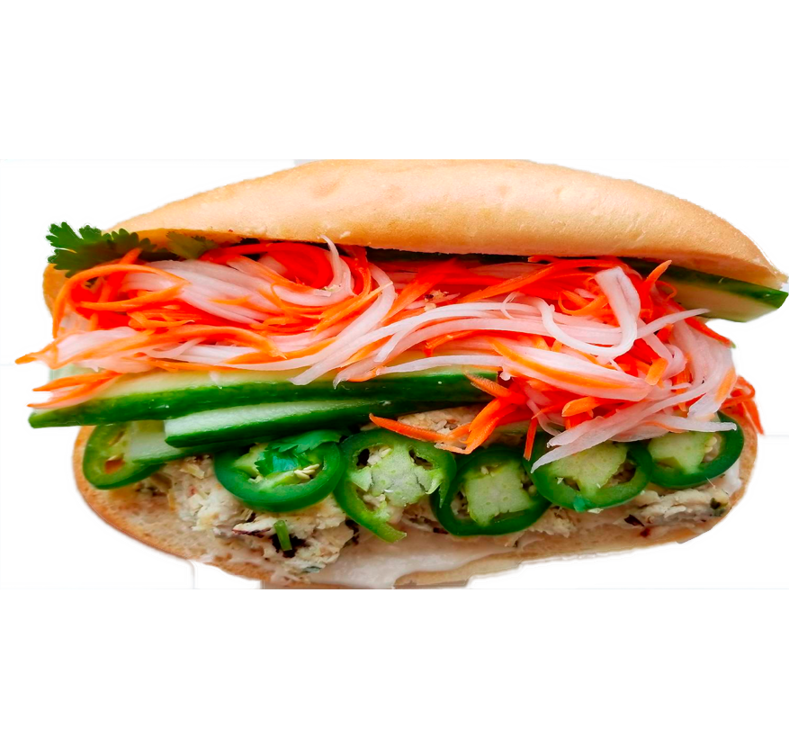

- Special (BBQ Pork, Ham, and Bologna)
- BBQ Pork
- Vietnamese Bologna
- Vietnamese Ham
- Tuna (no liver pate)
- Avocado Sandwich
Served all day at both Fat Straw locations. All Sandwiches made on freshly baked Baguette with homemade garlic mayo, pate, onions, pickled carrots and daikon, Jalapeno, cilantro, cucumber, salt, pepper and soy sauce.
